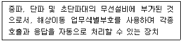
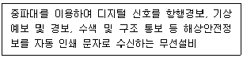
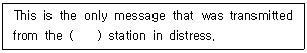
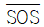
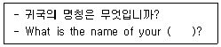
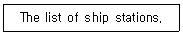
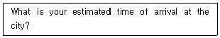
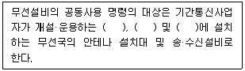
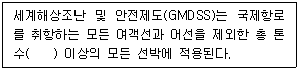

전파전자통신기능사 (2021-06-26 기출문제)
1과목: 임의 구분
1. AM 송신기에서 1[MHz]의 반송파를 2[kHz]의 가청주파수로 진폭 변조했을 때 점유주파수대역폭은?
- 2[kHz]
- 4[kHz]
- 988[kHz]
- 1002[kHz]
(정답률: 55%)

2. 다음 중 일반적인 송신기의 발진부에 대한 설명으로 옳지 않은 것은?
- 주파수 안정도가 매우 높은 수정발진기가 사용된다.
- 최근에는 PLL 방식이 이용된다.
- 발진주파수는 안정되고, 고조파 함유가 적어야 한다.
- 온도의 변화에 따른 안정을 위하여 정전압 회로를 사용한다.
(정답률: 34%)
3. 다음 중 SSB 송수신기의 특징으로 옳은 것은?
- 점유주파수대역폭이 DSB의 반으로 줄어든다.
- 주파수 이용도를 DSB에 비해 2배 정도 증가시킬 수 있다.
- 변조도가 1인 경우 소비전력은 DSB보다 적은 전력으로 작동될 수 있다.
- 외부잡음과 페이딩의 영향은 DSB의 경우와 같다.
(정답률: 73%)
4. 다음 중 레이다(Radar)의 최대탐지거리를 늘리는 방법으로 틀린 것은?
- 수심감도를 높게 한다.
- 송신출력을 크게 한다.
- 안테나 높이를 높인다.
- 안테나 이득을 낮춘다.
(정답률: 알수없음)
5. GPS 수신기로 정확한 위치정보를 파악하기 위해서는 최소한 몇 개의 GPS 위성으로부터 신호를 수신하여야 하는가?
- 2개
- 6개
- 8개
- 4개
(정답률: 50%)
6. 다음 중 무선송신기 회로에 속하지 않는 것은?
- 변조회로
- AVC(Automatic Volume Control)회로
- 발진회로
- 고주파증폭회로
(정답률: 60%)
7. 반송파의 주파수를 수직 상방으로 장파에서 초단파대에 이르기까지 연속적으로 변화시키면 어떤 주파수대에 이르러 더 이상 반사되지 않고 투과하는 주파수를 나타내는 용어는? (반사와 투과의 경계주파수)
- 최고사용주파수
- 최적사용주파수
- 최저사용주파수
- 임계주파수
(정답률: 알수없음)
8. 높이가 35[m]인 λ/4수직 접지 안테나의 실효고(he)는?
- 약 8.75[m]
- 약 22.3[m]
- 약 35[m]
- 약 70[m]
(정답률: 69%)
9. 6[MHz]의 주파수를 사용하는 반파장 다이폴 안테나의 길이는?
- 25[m]
- 50[m]
- 100[m]
- 200[m]
(정답률: 55%)
10. 무손실 선로에서 전압의 최대치가 600[V], 최소치가 200[V]일 경우 정재파비(SWR)는 얼마인가?
- 3
- 6
- 9
- 12
(정답률: 72%)
11. 다음 중 무선송신기에서 안테나 튜너의 역할 및 사용목적을 바르게 나타낸 것은?
- 송신기의 고주파 출력을 안테나에 최대로 공급하기 위하여
- 송신기의 중간주파 출력을 최소로 공급하기 위하여
- 송신기의 신호파 출력을 안테나에 최소로 공급하기 위하여
- 송신기의 출력보다 더 큰 출력을 안테나에 보내기 위하여
(정답률: 47%)
12. 1[byte]는 몇 개의 정보를 나타낼 수 있는가? (단, 1[byte]는 8[bit]이다.)
- 64
- 128
- 256
- 512
(정답률: 58%)
13. SSB(J3E)의 송신 전력은 DSB(A3E) 송신 전력의 몇 배가 되는가? (단, 변조도 m = 100[%]라 가정한다.)
- 3
- 6
- 1/3
- 1/6
(정답률: 57%)
14. 다음 중 DSC(Digital Selective Calling) 조난 경보 버튼을 눌루서 조난 정보를 발신할 경우에 자동으로 전송되는 것이 아닌 것은?
- 시간
- 조난 종류
- 해상이동업무식별부호
- 위치
(정답률: 72%)
15. 다음 중 위성통신 방식에 해당되지 않는 것은?
- 위상 위성 방식
- 헤테로다인 위성 방식
- 랜덤 위성 방식
- 정지 위성 방식
(정답률: 알수없음)
16. 선박지구국에서 사용하는 송신시스템의 EIRP가 의미하는 것은?
- 평균 복사전력
- 유효 복사전력
- 출력관의 등가전력
- 등가 등방성 복사전력
(정답률: 50%)
17. 다음 측정장비 중 시간영역의 신호를 주파수 영역에서 볼 수 있는 장비는 무엇인가?
- 신호발생기
- 소인발생기
- 계수형 주파수계
- 스펙트럼 분석기
(정답률: 58%)
18. 다음 중 급전선의 필요조건이 아닌 것은?
- 유도 방해를 받지 않을 것
- 송신용의 경우 절연 내력이 작을 것
- 급전선의 파동 임피던스가 적당할 것
- 전송 효율이 좋을 것
(정답률: 65%)
19. 어떤 전원정류기의 전압변동률이 20[%]이고, 전 부하에서의 직류출력전압이 250[V]라고 한다면 무부하시의 직류출력전압은 얼마인가?
- 500[V]
- 475[V]
- 312[V]
- 300[V]
(정답률: 55%)
20. 다음 중 측정용 지시계기의 구비조건으로 잘못된 것은?
- 확도가 높고 오차가 적을 것
- 응답도가 좋을 것
- 절연 및 내구력이 높을 것
- 출력임피던스가 가능한 클 것
(정답률: 77%)
2과목: 임의 구분
21. 다음 설명에 해당하는 해상 통신 기술장치는 무엇인가?

- 협대역직접인쇄전신(NBDP)
- 디지털선택호출(DSC)
- 네브텍스(NEVTEX) 수신기
- EGC 수신기
(정답률: 67%)
22. 다음 중 DSC(디지털선택호출) 장치를 이용한 호출 종별에 해당하지 않는 것은?
- 조난(Distress)
- 긴급 (Urgency)
- 개별(Individual)
- 방송 (Broadcast)
(정답률: 64%)
23. 다음 설명에 해당하는 무선설비는 무엇인가?

- SART
- DSC 수신기
- EGC 수신기
- NAVTEX 수신기
(정답률: 60%)
24. 다음 중 ITU 전기통신 개발 부분의 주요 기능이 아닌 것은?
- 개발도상국의 전기통신망과 서비스의 발전 및 운영을 촉진
- 개발도상국의 전기통신 개발에 산업계의 참여 및 기술 이전
- 전기통신 서비스 제공을 위한 개발사업 촉진을 목적으로 통신망 종합계획 수립
- 전기통신 표준화 분야에 대한 우선순위 및 전략 검토
(정답률: 43%)
25. 다음 중 ITU의 공용어가 아닌 것은?
- Russian
- Japanese
- Spanish
- Arabic
(정답률: 80%)
26. 다음 문장의 괄호 안에 가장 적합한 것은?

- ship
- bus
- rail
- train
(정답률: 100%)
27. What distress signal do you send in radiotelephony?
- K

- VVV
- MAYDAY
(정답률: 91%)
28. “모든 국은 불필요한 전송이 금지된다.”에서 '불필요한 전송'에 해당되는 단어로 적합한 것은?
- Unnecessary Transmission
- Superflous Signals and Correspondence
- Superflous
- Signals without Identification
(정답률: 85%)
29. 해상이동업무에 있어서 상대적으로 통신 우선순위가 가장 낮은 것은?
- Distress calls, distress messages and distress traffic.
- Safety Communications.
- Urgency Communications.
- Other Communications.
(정답률: 92%)
30. 다음 국문을 영역한 문장에서 괄호 안에 가장 적합한 것은?

- device
- vessel
- ship
- station
(정답률: 80%)
31. 다음 영문이 나타내는 가장 적합한 용어는?

- 선박국 국명국
- 선박 명세표
- 항구의 명단
- 선박국
(정답률: 85%)
32. 다음 중 약어 풀이가 틀린 것은?
- MSG : MESSAGE
- DEGS : DEGEREES
- TCO : TRUE COUNTING
- KTS : KNOTS
(정답률: 79%)
33. 다음 중 영문통화표의 발음 강세를 실선으로 표시한 것으로 틀린 것은?
- B : BRAH VOH
- H : HOH TELL
- P : PAH PAH
- Q : KEH BECK
(정답률: 73%)
34. “ALUX”라는 호출부호를 음성 통호표에 의해 옳게 풀어 쓴 것은?
- Alfa Lima Uniform X-ray
- Age Lime Unions X-mas
- Aggree Leema Ultra X-phone
- Aut lima ultra X-ray
(정답률: 84%)
35. 숫자 “5”를 통화표에 의하여 바르게 표현한 것은?
- FIVE
- FIVETH
- PANTAFIVE
- FIVETEEN
(정답률: 75%)
36. 다음 문장의 우리말 번역으로 옳은 것은?

- 귀 선은 그 도시에서 몇 시간 정박할 것입니까?
- 귀 선은 그 도시에 몇 시 도착할 예정입니까?
- 귀 선은 그 도시에서 몇 시에 출발할 예정입니까?
- 귀 선은 그 도시와 몇 시에 교신할 것입니까?
(정답률: 77%)
37. 다음 중 선박에서 선장에 해당하는 명칭은?
- Master
- Boatswain
- Engineer
- sailor
(정답률: 92%)
38. 전기통신의 효율적인 사용을 위해 국제협력을 증진하고 전기통신업무의 능률 향상을 위해 기술적 수단의 발달과 효율적 운용을 목적으로 하는 UN의 전문기구는?
- International Maritime Organization
- International Telecommunication Union
- International Electrotechnical Commission
- International Hydrographic Organization
(정답률: 100%)
39. 다음 중 세계무선항행경보시스템(NAVAREA Warning System)에 대한 설명으로 틀린 것은?
- 우리나라는 제11구역에 속한다.
- 전 세계 해양을 12개 구역으로 나뉜다.
- 선박의 안전운항을 위해 사전에 정보교환 수단이다.
- 우리나라 인근의 조정국은 Tokyo(Maritime Safety Agency)/JNA이다.
(정답률: 73%)
40. 다음 중 전파법의 목적과 체계에 대한 설명으로 틀린 것은?
- 전파 관련 법령의 최상위법이다.
- 하위에 전파법 시행령, 전파법 시행규칙, 고시 등으로 구성된다.
- 전파의 효율적이고 안전한 이용 및 관리에 관한 사항을 정하고 있다.
- 전파이용 요금의 합리화를 위한 정책 연구와 전파 관련 기술의 해외 수출을 위한 R&D 촉진을 목적으로 한다.
(정답률: 80%)
3과목: 임의 구분
41. 다음 중 전파법시행령에 관한 사항으로 옳지 않은 것은?
- 이 법령은 국회에서 제정한다.
- 전파법에서 위임된 사항을 규정한다.
- 전파법의 시행에 필요한 사항을 규정한다.
- 이 법령은 대통령령이다.
(정답률: 62%)
42. 주어진 발사종별 전파에 대해 특정한 조건하에서 사용되는 통신방식에 필요한 전송속도와 품질로 정보를 전송하는데 충분한 주파수대폭을 무엇이라 하는가?
- 점유주파수대폭
- 스퓨리어스대폭
- 필요주파수대폭
- 특성주파수대폭
(정답률: 77%)
43. 전파법에서 정의하는 용어로서 “특정한 주파수의 용도를 정하는 것”을 무엇이라고 하는가?
- 주파수 분배
- 주파수 할당
- 주파수 회수
- 주파수 배정
(정답률: 60%)
44. 다음 중 과학기술정보통신부장관이 전파자원을 확보하기 위하여 시행해야 할 시책으로 거리가 먼 것은?
- 새로운 주파수의 이용기술 개발
- 주파수의 국내등록
- 이용 중인 주파수의 이용효율 향상
- 국가간 전파의 혼신을 방지하기 위한 협의·조정
(정답률: 72%)
45. 다음 중 과학기술정보통신부가 무선국 개설허가를 취소 또는 개설신고한 무선국의 폐지를 명하거나 무선국의 변경·운용제한 또는 운용정지를 명할 수 있는 경우가 아닌 것은?
- 비상사태가 발생한 경우
- 혼신을 방지하기 위하여 필요한 경우
- 주파수 회수 또는 주파수 재배치를 한 경우
- 주파수 할당을 한 경우
(정답률: 59%)
46. 다음 중 1년 이상 15년 이하의 징역에 처하는 벌칙에 해당하는 자는?
- 긴급통신의 명령을 받고 지체없이 이를 발신하지 아니한 자
- 조난통신의 조치를 하지 아니한 자
- 국가기관을 폭력으로 파괴할 것을 주장하는 통신을 한 자
- 조난통신의 조치를 방해한 자
(정답률: 74%)
47. 다음 중 허가 유효기간이 같은 것끼리 나열되지 않은 것은?
- 육상이동국, 이동국
- 의무선박국, 의무항공기국
- 실험국, 실용화시험국
- 육상국, 표준주파수 및 시보국
(정답률: 42%)
48. 다음 중 무선국의 사용승인서, 허가증 또는 무선국 신고증명서에 적힌 사항의 범위를 초과하여 운용할 수 있는 경우가 아닌 것은? (단, 선박의 경우 항행 중인 경우로 한정한다.)
- 의료통보에 관한 통신
- 무선기기의 시험을 위하여 하는 통신
- 기상의 조회를 위하여 하는 선박국 상호 간의 통신
- 거리를 측정하기 위하여 하는 해안국과 선박국 간의 통신
(정답률: 42%)
49. 일반적인 무선통신업무에 종사하는 자는 몇 년마다 통신보안교육을 받아야 하는가?
- 1년
- 2년
- 3년
- 5년
(정답률: 79%)
50. 다음 중 수신설비의 기술기준으로 잘못된 것은?
- 수신주파수는 운용범위 이내일 것
- 선택도가 클 것
- 내부잡음이 적을 것
- 감도는 높은 신호입력에서만 양호할 것
(정답률: 90%)
51. 다음 중 네비텍스 수신기에 대한 설명으로 틀린 것은?
- 518[kHz]의 F1B 전파를 수신하여 인쇄 또는 표시해야 한다.
- 협대역직접인쇄전신통신을 수신하여 인자 또는 표시할 수 있다.
- 수신기능 및 표시기능이 정상으로 작동하고 있음을 쉽게 확인할 수 있어야 한다.
- 항행경보를 수신한 경우에는 수동으로만 정지시킬 수 있는 특별 경보기능이 있다.
(정답률: 50%)
52. 다음은 무선설비 공동사용과 관련된 내용이다. 괄호 안에 들어갈 내용으로 맞지 않는 것은?

- 기지국
- 육상이동국
- 이동중계국
- 고정국
(정답률: 42%)
53. 국제전기통신연합의 언어에 오해나 분쟁이 있을 때는 어느 나라 말을 우선으로 하는가?
- 영어
- 불어
- 중국어
- 스페인어
(정답률: 알수없음)
54. 다음 중 전파규칙에서 해상이동업무에 해당하지 않는 통신은?
- 해안국과 선박국간
- 선박국 상호간
- 관련된 선상통신국 상호간
- 해안국 상호간
(정답률: 59%)
55. GMDSS에서 수색구조용 레이타 트랜스폰더의 사용 주파수대는?
- 9,800~9,900[MHz]
- 9,600~9,700[MHz]
- 9,200~9,500[MHz]
- 9,000~9,100[MHz]
(정답률: 70%)
56. VHF 디지털선택호출장치(DSC)의 조난경보 및 안전호출용 주파수는?
- 156.525[MHz]
- 156.800[MHz]
- 156.300[MHz]
- 156.650[MHz]
(정답률: 40%)
57. 다음 괄호 안에 들어갈 적당한 말은?

- 100톤
- 200톤
- 300톤
- 400톤
(정답률: 79%)
58. 다음 중 통신보안의 필요성에 대한 이유로 옳지 않은 것은?
- 전기통신의 고도화로 통신시설이 대량 공급됨에 따라 그 이용도가 급증되면서 비밀누설 요인도 비례적으로 증가하고 있다.
- 사회 각 분야의 활동사항이 대부분 전기통신에 의하여 전달하고 있으므로 전기통신은 풍부한 정보의 원천이 되고 있다.
- 통신정보의 수집을 위한 도청능력이 날로 강화되고 있다.
- 통신정보수집방법이 타 정보수집방법에 비하여 위험하며 비용이 많이 든다.
(정답률: 70%)
59. 다음 중 방향탐지에 대한 방지책으로 옳지 않은 것은?
- 불필요한 통신 또는 전파발사 억제
- 예비주파수로 전환
- 통신제원이 수시 변경
- 무선침묵 유지
(정답률: 46%)
60. 다음 중 통신보안 위규사항이 아닌 것은?
- 적성국 통신소와의 교신
- 공개할 수 엇는 외교 조약 누설
- 첩보 수집사항 누설
- 통신제원의 수시변경
(정답률: 85%)